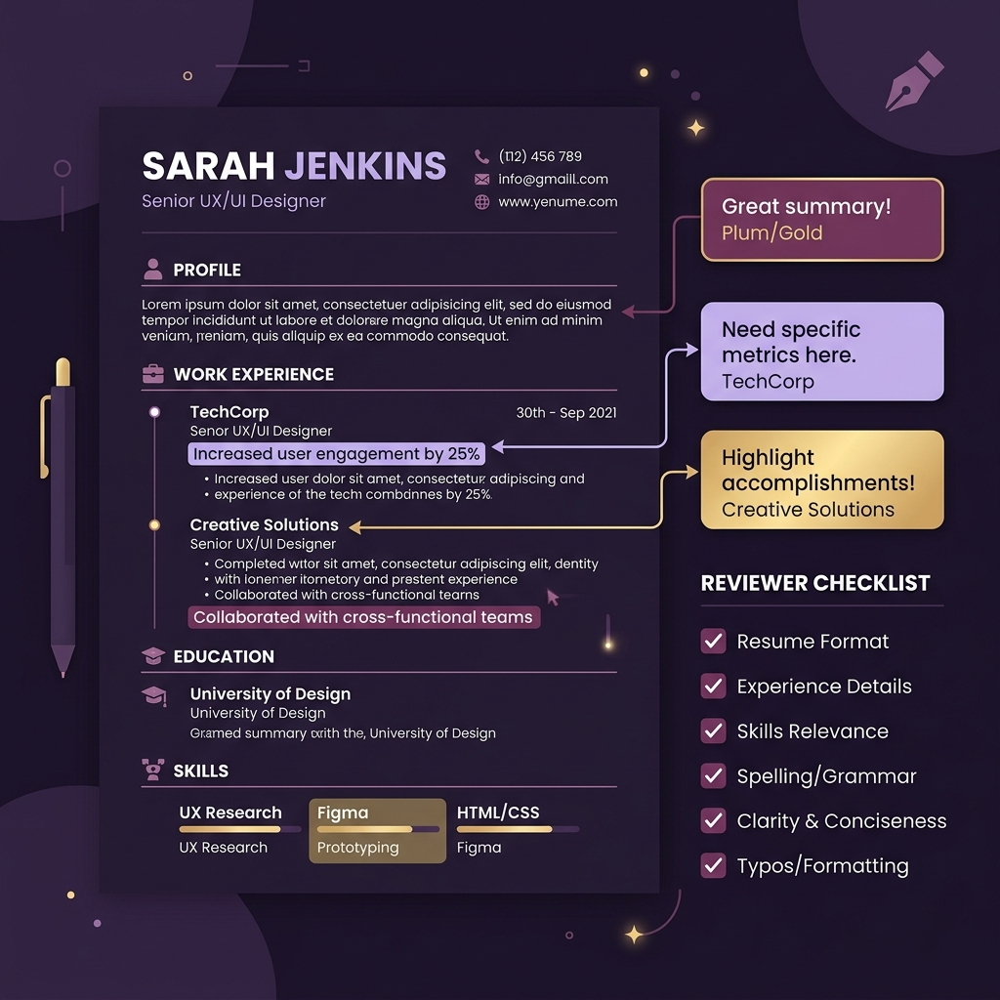

Freelance Service Details Detail Layanan Freelance
CV Review — See your CV the way recruiters do. Review CV — Lihat CV Anda dari sudut pandang perekrut.
Get your CV reviewed by someone who actually screens CVs for a living. I'll check your structure, ATS-readiness, and content, then tell you exactly how to make it work harder for you. Dapatkan ulasan CV Anda dari seseorang yang menyaring CV untuk pekerjaannya sehari-hari. Saya akan memeriksa struktur, kesiapan ATS, dan konten Anda, lalu memberi tahu Anda secara tepat cara membuatnya bekerja lebih keras untuk Anda.
The Problem Masalah Utama
Many candidates send generic CVs that fail to pass the 10-second human scan or get filtered out by Applicant Tracking Systems (ATS). They list daily duties instead of showing measurable results, making it hard for recruiters to see their actual value. Banyak kandidat mengirimkan CV generik yang gagal lolos pemindaian 10 detik pertama oleh manusia atau tersari oleh Applicant Tracking Systems (ATS). Mereka sekadar mencantumkan daftar tugas harian tanpa menonjolkan hasil kerja yang terukur.
The Goal Tujuan Layanan
Shift your CV from a passive list of past duties into an active self-marketing tool. By reviewing it through an active recruiter's perspective, we ensure it highlights your actual achievements, structures information cleanly, and satisfies standard screening criteria. Mengubah CV Anda dari sekadar daftar pasif tugas masa lalu menjadi alat pemasaran diri yang aktif. Dengan meninjaunya dari sudut pandang perekrut aktif, kami memastikan CV Anda menonjolkan pencapaian nyata, menyusun informasi dengan rapi, dan memenuhi kriteria penyaringan standar.
Freelance & Bespoke Layanan Mandiri & Kustom
This service is delivered on a freelance basis. Every review is tailored directly to your individual career targets, offering personalized, honest, and high-impact written feedback without generic templates or automated reports. Layanan ini disediakan secara freelance. Setiap tinjauan disesuaikan langsung dengan target karier pribadi Anda, menawarkan masukan tertulis yang personal, jujur, dan berdampak tinggi tanpa menggunakan template generik atau laporan otomatis.
Methodology Metodologi
The 5-Point CV Review Framework. 5 Pilar Utama Peninjauan CV.
Structure & Formatting Scan Pemeriksaan Struktur & Format
Recruiters scan CVs in under 10 seconds. I analyze your layout hierarchy, font readability, section ordering, and spacing to ensure your most important career wins catch the eye immediately. Perekrut memindai CV dalam waktu kurang dari 10 detik. Saya menganalisis hierarki tata letak, keterbacaan font, urutan bagian, dan spasi untuk memastikan pencapaian karier terpenting Anda langsung menarik perhatian.
ATS-Readiness Check Pemeriksaan Kesiapan ATS
Applicant Tracking Systems filter out resumes with unreadable tables, graphics, headers, or columns. I check your file format and parsing compatibility to make sure your data flows perfectly into recruiter databases. Applicant Tracking Systems menyaring resume yang memiliki tabel, grafik, header, atau kolom yang tidak terbaca. Saya memeriksa format file dan kompatibilitas penguraian untuk memastikan data Anda mengalir sempurna ke database perekrut.
Keyword & Relevance Review Peninjauan Kata Kunci & Relevansi
To get shortlisted, your CV must match the target job description. I compare your CV against your target roles, highlighting gaps in industry keywords, skill phrases, and title alignment. Agar terpilih, CV Anda harus cocok dengan deskripsi pekerjaan yang ditargetkan. Saya membandingkan CV Anda dengan peran target Anda, menunjukkan kesenjangan dalam kata kunci industri, frasa keterampilan, dan penyelarasan judul posisi.
Content & Achievement Feedback Masukan Konten & Pencapaian
We replace boring lists of daily duties with action-driven, result-oriented statements. I guide you on how to write impact bullet points using metrics, scale, and clear business outcomes. Kami mengganti daftar tugas harian yang membosankan dengan pernyataan yang berorientasi pada hasil dan aksi. Saya memandu Anda menulis poin-poin pencapaian menggunakan metrik, skala, dan hasil bisnis yang jelas.
Written Feedback Summary Laporan Ringkasan Masukan Tertulis
You will receive a comprehensive, structured feedback report with clear, actionable recommendations. No vague advice — only specific, step-by-step changes you can apply to your CV immediately. Anda akan menerima laporan masukan terstruktur yang komprehensif dengan rekomendasi yang jelas dan dapat ditindaklanjuti. Bukan saran yang samar — melainkan perubahan spesifik demi langkah demi langkah yang dapat Anda terapkan segera.
Before vs. After CV Impact Transformation Transformasi Dampak CV: Sebelum vs. Sesudah
❌ Before (Passive Duty List)
❌ Sebelum (Daftar Tugas Pasif)
"Responsible for managing HR administration, screening applicant resumes, and assisting with onboarding new employees." "Bertanggung jawab mengelola administrasi HR, menyaring CV pelamar, dan membantu proses onboarding karyawan baru."
✅ After (Human Signal & Metrics)
✅ Sesudah (Sinyal Manusia & Metrik)
"Guided onboarding workflow for 15+ new hires and screened 150+ monthly CVs using Boolean search, cutting recruitment cycle time by 20%." "Memandu alur kerja onboarding 15+ karyawan baru dan menyaring 150+ CV bulanan menggunakan Boolean search, memangkas waktu proses rekrutmen sebesar 20%."
Target Audience Target Layanan
Tailored for career advancement. Disesuaikan untuk peningkatan karier Anda.
- Fresh Graduates:Lulusan Baru: Preparing for your first professional job application and wanting to start on the right foot with a clean layout. Mempersiapkan lamaran pekerjaan profesional pertama Anda dan ingin memulainya dengan langkah yang benar dengan tata letak bersih.
- Career Switchers:Peralihan Karier: Repositioning your past experiences and transferrable skills to fit a completely new role or target industry. Memposisikan ulang pengalaman masa lalu dan keterampilan yang dapat ditransfer agar sesuai dengan peran atau industri target baru.
- Active Professionals:Profesional Aktif: Applying for a specific promotion or target company and needing an expert second opinion from an active recruiter. Melamar promosi tertentu atau perusahaan target dan membutuhkan pendapat kedua ahli dari seorang perekrut aktif.
Simple, Step-by-Step Workflow Alur Kerja Sederhana Langkah-demi-Langkah
-
1. Send Your CV1. Kirim CV Anda
Share your current CV (PDF/Word format) along with target roles, job descriptions, or target industries you wish to apply to. Bagikan CV Anda saat ini (format PDF/Word) beserta peran target, deskripsi pekerjaan, atau industri target yang ingin Anda lamar. -
2. The Review Process2. Proses Peninjauan
I review your CV within 2-3 working days, applying active recruitment criteria, screening checks, and ATS parsing simulations. Saya meninjau CV Anda dalam 2-3 hari kerja, menerapkan kriteria rekrutmen aktif, pemeriksaan skrining, dan simulasi penguraian ATS. -
3. Receive Detailed Report3. Terima Laporan Detail
Get your written report covering structure, ATS compatibility, keywords, and content rewritten suggestions. An optional call can be scheduled for consultation. Dapatkan laporan tertulis Anda yang mencakup saran penulisan ulang struktur, kompatibilitas ATS, kata kunci, dan konten. Panggilan opsional dapat dijadwalkan untuk konsultasi.

Pricing & Packages Paket & Harga
Packages tailored to your needs. Paket yang disesuaikan dengan kebutuhan Anda.
Basic Review
Structure, ATS & keyword check + written feedback. Struktur, pemeriksaan ATS & kata kunci + masukan tertulis.
Pricing available upon request — message me for details. Harga tersedia berdasarkan permintaan — hubungi saya untuk detailnya.
Review + Rewrite
Everything in Basic, plus rewritten bullet points for key sections of your CV. Semua yang ada di Basic, ditambah penulisan ulang poin-poin penting untuk bagian utama CV Anda.
Pricing available upon request — message me for details. Harga tersedia berdasarkan permintaan — hubungi saya untuk detailnya.
Review + Consultation
Everything in Basic, plus a short follow-up call to discuss suggestions together. Semua yang ada di Basic, ditambah panggilan tindak lanjut singkat untuk membahas saran bersama-sama.
Pricing available upon request — message me for details. Harga tersedia berdasarkan permintaan — hubungi saya untuk detailnya.
Note on ATS & Hiring:Catatan tentang ATS & Rekrutmen:
While no service can guarantee a job call (since final hiring decisions depend on recruiter configurations and job fit), this review guarantees your CV is designed to parse cleanly through modern ATS systems and optimized to grab a human recruiter's attention in under 10 seconds.
Meskipun tidak ada layanan yang dapat menjamin panggilan kerja (karena keputusan akhir bergantung pada kriteria internal perusahaan dan kecocokan posisi), ulasan ini memastikan CV Anda dirancang agar terbaca dengan sempurna oleh sistem ATS modern dan dioptimalkan untuk menarik perhatian perekrut dalam waktu kurang dari 10 detik.
Get Started Mulai Sekarang
Ready to find out what your CV is really saying about you? Siap mengetahui apa yang sebenarnya dikatakan CV Anda tentang Anda?
Send it over and let's make it work harder for you. I will analyze your formatting and content to help you make a stronger first impression with hiring managers. Kirimkan sekarang dan mari buat CV Anda bekerja lebih keras untuk Anda. Saya akan menganalisis format dan konten Anda untuk membantu Anda memberikan kesan pertama yang lebih kuat bagi manajer perekrutan.
Availability: Freelance only
Ketersediaan: Hanya Freelance
Why Choose Human Recruiter Review? Mengapa Memilih Review Rekruter Asli?
AI & Free Generators vs. Active Recruiter Review AI / Generator Gratis vs. Ulasan Rekruter Asli
🤖 AI / Generator / Free ATS Checker
- Membaca kaku: Sering salah membaca format kolom, tabel, atau layout unik.
- Hanya grammar: Memperbaiki tata bahasa tanpa paham konteks industri atau pencapaian terukur.
- Tanpa pengalaman pewawancara: Tidak pernah memanggil kandidat atau tahu alasan kandidat sering gugur.
- Respon 1 arah: Hasil kaku tanpa ruang konsultasi atau diskusi 2 arah.
👩💼 Tiara Saputri (Rekruter Asli)
- Kacamata Rekruter: Tahu persis cara HR membaca CV dalam 6–10 detik pertama.
- Dampak Terukur: Menggali cerita & merubah tugas harian jadi pencapaian berbobot (misal: Cut time-to-hire by 80%).
- Tren Pasar Kerja Lokal: Paham kriteria & kosa kata industri HR, Tech, Retail, dan E-Commerce di Indonesia.
- Konsultasi WhatsApp: Tempat diskusi 2 arah, siap menjawab pertanyaan seputar lamaran & interview.
Transparent Pricing & Bundles Paket Harga & Hemat Berdua
Choose the Package That Fits Your Career Goals Pilih Paket yang Sesuai dengan Kebutuhan Karirmu
🎓 Student & Basic Audit 🎓 Paket Mahasiswa & Basic
Perfect for undergraduate students or quick ATS score checks. Cocok untuk mahasiswa, fresh graduate, atau cek kilat skor ATS.
Rp 15.000
Single Order (Student Rate)
Paket Personal Mahasiswa
👩❤️👨 Bestie Pair: Rp 25.000 (2 CVs)
👩❤️👨 Paket Berdua: Rp 25.000 (2 CV)
- Pemeriksaan Format ATS & Scorecard
- Analisis Kata Kunci Kunci (Keyword Gap)
- Status Lolos / Gugur Format
- Penulisan Ulang Deskripsi Kerja
- Optimasi Profil LinkedIn
- Surat Lamaran (Cover Letter)
💼 Full CV Makeover 💼 Paket Full Review CV
Complete line-by-line review and restructuring by an active recruiter. Ulasan menyeluruh baris-demi-baris & perbaikan konten oleh rekruter.
Rp 45.000
Single Personal Rate
Paket Personal
👩❤️👨 Bestie Pair: Rp 70.000 (2 CVs)
👩❤️👨 Paket Berdua: Rp 70.000 (2 CV)
- Semua Fitur Basic Audit
- Kacamata Rekruter: Review baris-demi-baris
- Penulisan Ulang: Action verbs & dampak terukur
- 1x Gratis Revisi
- File Master (DOCX & PDF)
- Optimasi Profil LinkedIn
🚀 Ultimate Career Bundle 🚀 Paket Komplit Karir
End-to-end makeover: CV + LinkedIn Profile + Custom Cover Letter. Paket lengkap: CV + Optimasi LinkedIn + Surat Lamaran Kerja.
Rp 75.000
Single Personal (Save 40%)
Paket Personal (Hemat 40%)
👩❤️👨 Couple Bundle: Rp 130.000 (2 Bundles)
👩❤️👨 Paket Couple/Bestie: Rp 130.000 (2 Paket)
- Semua Fitur Full CV Makeover
- Optimasi Profil LinkedIn: Headline, About & Keyword Alignment
- Surat Lamaran Kerja (Cover Letter): Disesuaikan posisi impian
- Konsultasi WhatsApp 2-Arah
- Format Siap Melamar (PDF + DOCX)
- Pengerjaan Prioritas 24-48 Jam